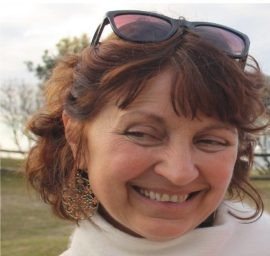
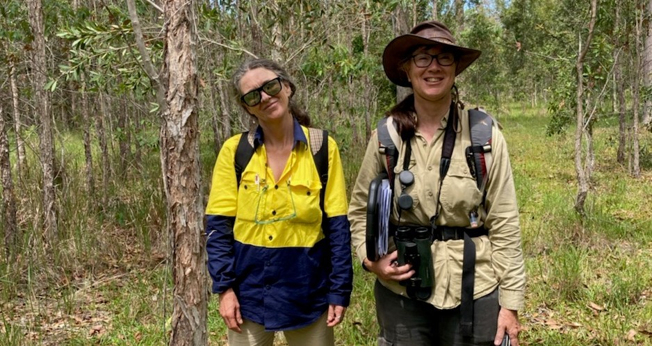

Our Team
Greenloaning Biostudies is built on a core team of experienced ecologists and environmental scientists committed to delivering high-quality assessments and sound practical advice.

Alison Martin
Company Director & Principal EcologistOver 30 years of experience in ecological assessments, surveys and expert witness work across NSW and Queensland.
View Profile
Field Ecologists
Ecological Survey TeamOur experienced field ecologists conduct rigorous baseline surveys, targeted species assessments, and biodiversity monitoring across a wide range of environments.

At Greenloaning we employ a small but committed team of environmental professionals; between us we have more than 100 years of environmental experience.
Mark Ambrose – Ecologist/Project Manager
Mark is a senior ecologist with 15 years’ experience in the private and not-for-profit sectors. For the past ten years Mark has worked in environmental consultancy, both in the UK and Australia. In the UK he worked for one of the leading environmental consultancies on national infrastructure projects and held survey licenses for a number of European Protected Species. He has also co-authored two peer-reviewed papers on hazel dormice and presented one of these at the 8th International Dormouse Conference in Ostritz, Germany.
Since returning to Australia in 2016, Mark has undertaken surveys on large infrastructure projects such as the Pacific Highway upgrade in northern NSW and the Carmichael Rail Network in northern Qld. As well as survey skills, Mark has extensive experience handling native wildlife, particularly koalas, and is an active member of the not-for-profit Friends of the koala where he is currently the Care and Rescue Coordinator.
Linda Swankie – Ecologist
Linda is a professional ecologist with over 19 years’ experience in consultancy. She is experienced in carrying out surveys for a wide range of fauna and flora, designing field surveys, managing survey teams and developing mitigation and long-term monitoring projects. In the UK, Linda held several protected species survey licences, produced impacts assessments, designed and managed mitigation projects and appeared as an Expert Witness at a planning appeal. She is qualified as a Chartered Environmentalist (CEnv) under CIEEM (the governing body for ecologists in the UK) and is certified to Level 4 in field identification skills by the Botanical Society of Britain and Ireland.
Since moving to Australia, Linda’s gained extensive experience in Koala surveys across NSW and SE Queensland. She is currently involved in Koala research through her position as Research Coordinator at Friends of the Koala in Lismore. Linda also has good bird identification skills and has completed bird surveys for two airport projects. She has been involved in surveys for threatened species, including the iconic Brush-tailed Rock-wallaby and a wetland herb, Lindernia alsinoides, as well as assisting with BioBanking and BAM vegetation plot surveys. She has good report writing and reviewing skills and has acted as mentor to several junior ecologists in the course of her career.
Tracey Sanna – Ecologist
Tracey has a Bachelor degree in Wildlife Science from the University of Queensland and has 24 years of experience as a licensed wildlife rescuer and carer. This experience has given Tracey extensive background knowledge of the behaviour and requirements of a range of native fauna. Tracey has also been working with Koalas since 2009 and is experienced in Koala rescue and husbandry, and is competent in her assessment of the health status of Koalas in the wild. Tracey has assisted with Koala surveys for a North Coast council.
Tracey has worked with Greenloaning in background research for recent projects and has assisted with microbat and ground fauna trapping surveys, as well as the establishment of a threatened plant species monitoring program. Tracey provides valuable research and practical skills to each project.